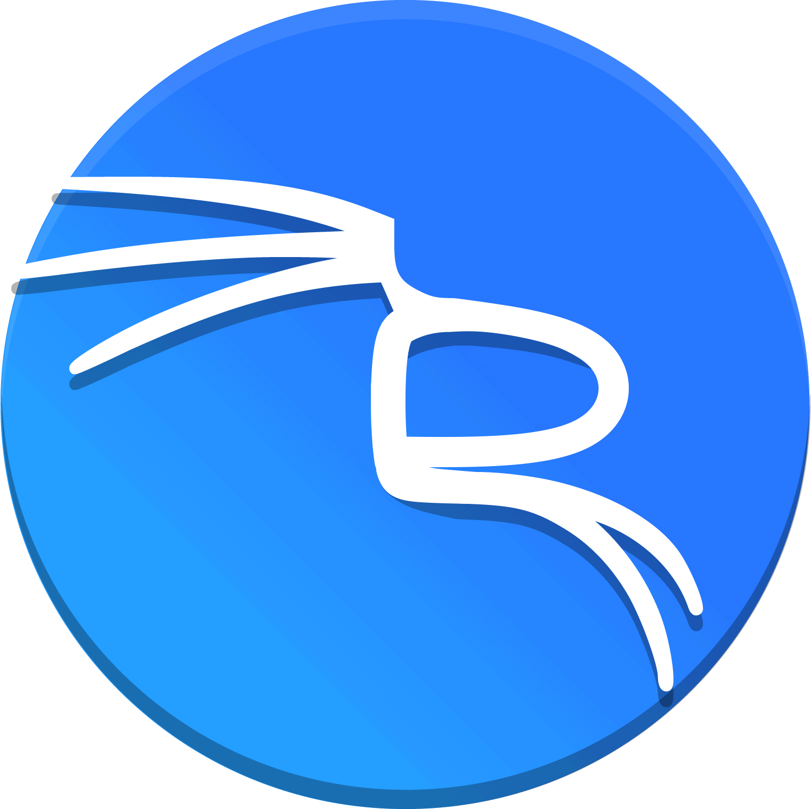

I AM ELIAS BAROUDI
A CYBERSECURITY STUDENT
I am a final-year Master’s student in OPSIE (Organization and Protection of Information Systems in Business), SecNumEdu-certified by ANSSI at Lyon 2 University. Passionate about the technical side of security, I enjoy understanding the complex mechanisms that protect information systems. On this site, you will find resources on the cybersecurity concepts I explore daily, as well as some personal insights to get to know the person behind this content.
